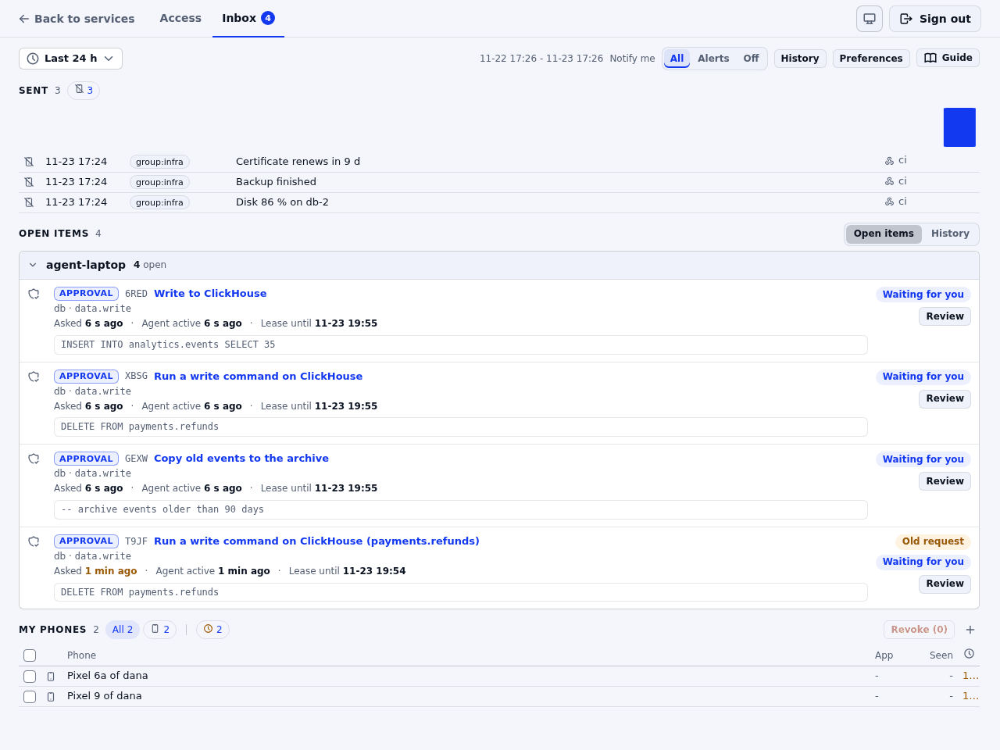
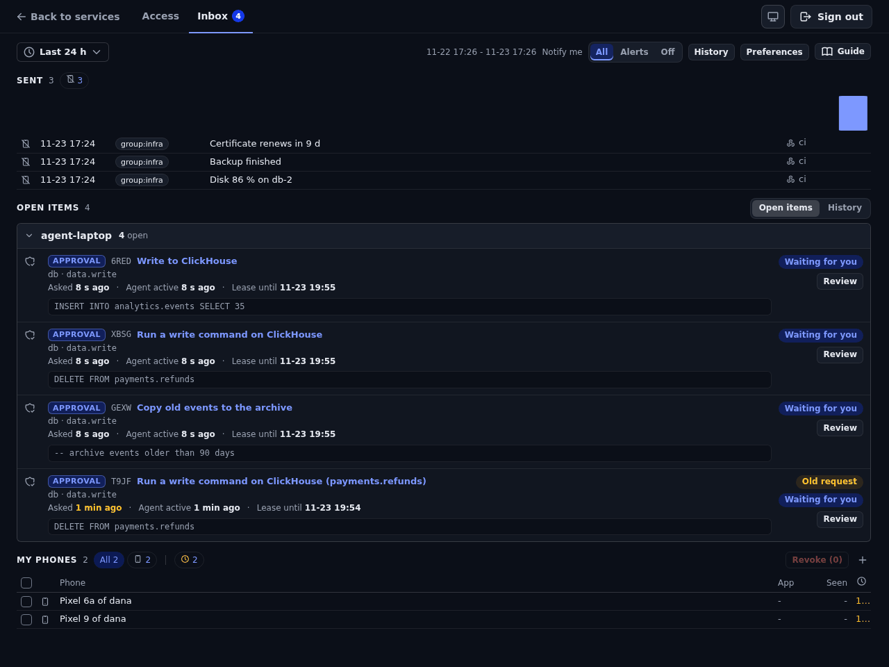
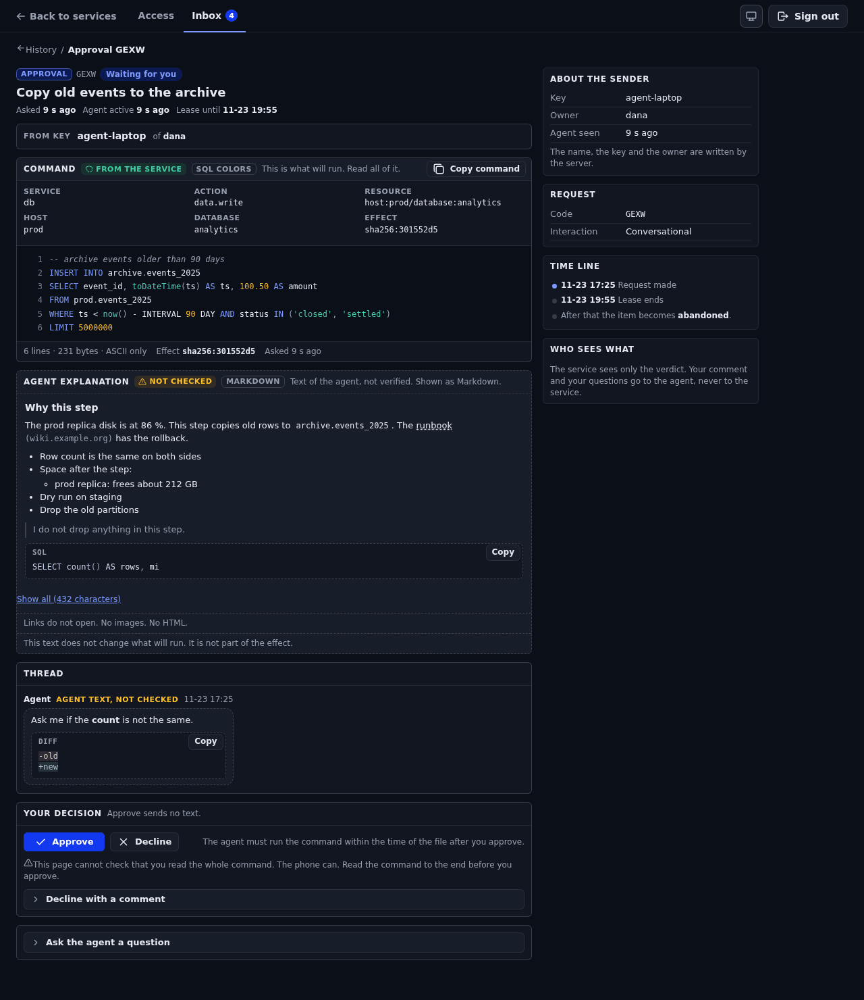
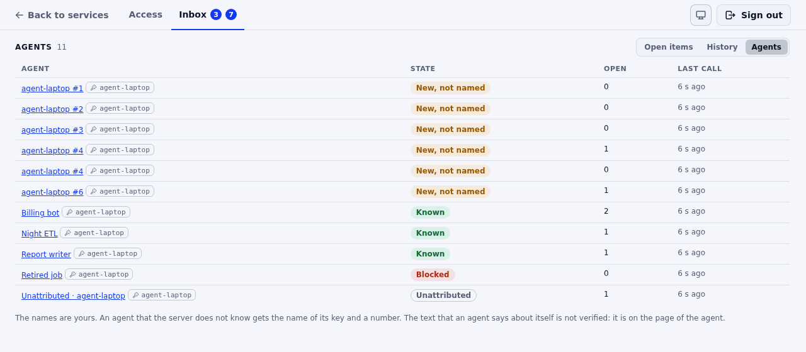
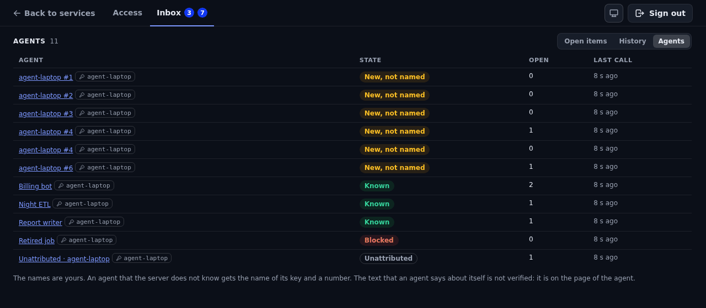

This page is for operators and for people who send alerts. It starts when the configuration file has a block inbox. Without this block, the portal has no Inbox and opens no route for it. The senders, the pages and the phones use the same port of the portal.
Related pages: Agent channel, Phone protocol, Inbox configuration rules, Inbox security model, Android app, Requirements, Design and the generated configuration reference.
Contents:
- Concepts and What the Inbox guarantees
- Configure the Inbox, Groups and Rights of the Inbox
- Keys of the senders and Send an alert
- Alerts of the portal
- Listeners and routes and Reverse proxy
- Enroll a phone
- The tab Inbox, Notifications in the browser
- Items: approvals and questions
- Storage and failure modes, Commands, Metrics and Stop
- Troubleshoot
Concepts
The Inbox runs in the same process and in the same Tokio runtime as the portal. It starts and stops with the portal. A phone and a key of the file do not need a session of the portal. The Inbox delivers alerts when the rest of the portal is not ready. The rights come from the directory of the portal.
| Word | Use |
|---|---|
| Alert | One group (or one account) and one title. The title has one line of 128 characters at most. An alert has no body and no severity. It has a field kind, and the only value is alert. |
| Group | A named list of phones that follow it. The configuration file defines the groups. A group can be critical: no limit ever stops an alert to it. |
| Sender | A program that sends alerts: a script, Grafana, Alertmanager, a service or the portal itself. It uses an API key. |
| API key | A key with the prefix api_. The routes of the Inbox verify it in the portal process. |
| Agent | A program that asks a person to approve an action or to answer. It uses an mcp_ key at the MCP endpoint, or an api_ key at the REST routes of the items. See Agent channel. |
| Item | An approval or a question that an agent sends to a person. An item needs an answer. An alert does not. |
| Phone | An Android phone that runs the app Portal Inbox and enrolled with an account of the portal. |
| Account | An account of the portal. It owns its phones. Its login is the user name of each phone. |
| Subscription | The link between one phone and one group. The phone chooses it. The account must have the permission inbox.receive on the group. |
| Delivery | The record that one alert must reach one phone. The Inbox makes one delivery for each phone that is subscribed when it accepts the alert. An alert of the portal about a service is an exception: see Alerts of the portal. |
| Enrollment code | A text that the account makes in the Inbox page. It lets one phone enroll one time. |
The phone decides how it reacts to an alert: alarm, ring or notify. The server never knows this choice. See Android app.
The wire protocol of the phones is protocol 5: enrollment with a one-time code, the Noise IK session, and items that the owner answers. Phone protocol describes it.
What the Inbox guarantees
Each subscribed phone gets each alert, and shows it one time. This holds also when the phone was off, in airplane mode or disconnected when the alert came.
- The API answers
201only after the alert is on disk. The alert and one delivery for each subscribed phone are in one transaction. - The Inbox sends again each delivery that the phone did not confirm. It sends again during the session (
inbox.devices.resend_after) and at each reconnection. - The phone stores the alert before it confirms it. It ignores an alert id that it already has.
- If the phone stores an alert and the app stops before it shows it, the app shows it at the next start.
- The Inbox keeps an alert for a phone until
inbox.storage.delivery_ttl. After this time, the delivery expires, and the page shows it as expired. - The Inbox deletes the history after
inbox.storage.alert_retention.
A gap in coverage is visible. A subscribed phone that the Inbox does not see for inbox.devices.unreachable_after is unreachable in the page and in the metric portal_inbox_devices_unreachable. The app shows its connection state all the time. It warns the user after inbox.devices.offline_warning_after.
The transport is at least once. If two instances or a retry send the same alert, the idempotency key makes one alert. A lost receipt can cause a second send to a phone. The app ignores the second copy, so the user sees one alert.
If PostgreSQL has no writable primary, the Inbox continues in a degraded mode: see Storage and failure modes.
Configure the Inbox
The block inbox holds all the settings. This example has a group, a phone endpoint and one API key of the file.
inbox { server_key_file = "/run/secrets/inbox_server_key" # or: server_key_env devices { public_address = "https://inbox.example.org" # the public base URL of the portal; no default heartbeat_interval = "20s" # no default session_timeout = "60s" # no default resend_after = "15s" # no default max_inflight = 32 # no default unreachable_after = "2m" # no default offline_warning_after = "3m" # no default } enrollment { # optional block code_ttl = "10m" # default max_active_per_account = 5 # default } storage { delivery_ttl = "7d" # no default alert_retention = "30d" # no default connection_log_retention = "90d" # no default } group "infra" { name = "Infra prod" description = "Production outages" critical = false # default; true: no limit on alert.send } api_key "grafana" { owner = "grafana" # an account of the file: a block user secret_file = "/run/secrets/inbox_grafana_key" # or: secret_env groups = ["infra"] # direct_alerts = false # default; true: the key can alert an account (the owner needs alert.send_user) }}# An API key needs the kind api, and an account of the file as its owner.access { grants_mode = "hybrid" }keys { mcp = false api = true }user "grafana" { grants = [ "keys.own.use on service:portal/key_kind:api", "alert.send on service:portal/inbox_group:infra", ]}The delivery values have no default. The program stops at start when one of them is absent. They are heartbeat_interval, session_timeout, resend_after, max_inflight, unreachable_after, offline_warning_after, delivery_ttl, alert_retention and connection_log_retention. A wrong default could hide an alert, so the operator chooses each value.
The configuration reference lists every key with its type, range and default. Inbox configuration rules gives the rules between the keys. Check a file with portal check-config --config FILE.
Groups
A group is a block group "<id>" in the block inbox. The id has 1 to 64 characters of a-z, 0-9, - and _. The block inbox needs one group at least.
inbox { group "infra" { name = "Infra prod" description = "Production outages" critical = false }}The permissions of the portal features (the service portal) control each group:
inbox.receivelets the phones of an account subscribe to the group.alert.sendlets an account or a key send an alert to the group.alert.readlets an account or a key read the alerts of the group and their delivery.alert.send_userlets an account or a key send an alert to any account. This permission is on the whole serviceportal, with no group.
Give these permissions in the editor of permissions of the account or of the key. The editor lists each group by name. A permission on the whole service is not valid for inbox.receive, alert.send and alert.read. Give one permission for each group. alert.send_user is the other way: it has no group, so give it on service:portal.
Rights of the Inbox (the service portal)
The portal has one internal scope for its features: the service portal. The code holds its action document. The scope has two features. The keys are in it when the file has the block keys. The Inbox is in it when the file has the block inbox. The settings pages show the scope as the group Server permissions, apart from the group Services (the workloads of the launcher).
The launcher and the page Services never list it. The editor lists each group of the file as the node inbox_group:<id>, with the name of the group, so nobody types an id.
| Action | Applies to | Gives |
|---|---|---|
inbox.receive | inbox_group | The phones of the account can subscribe to the group, for all the kinds of message. |
alert.send | inbox_group | Send an alert to the group (the form, the API with a key). It has the budget alerts. |
alert.send_user | the service | Send an alert to any account. The alert goes to each phone of the account. It has the budget alerts, the same count as alert.send. |
alert.read | inbox_group | See the alerts of the group and their delivery. |
phone.read | the service | See all the phones. |
phone.revoke | the service | Revoke any phone. It needs phone.read. |
phone.log | the service | See the connection log. |
approval.read | the service | See the requests of all the accounts: the state, the key, the service and the times. It never gives a content. |
approval.cancel | the service | Cancel an open request of any account. It needs approval.read. |
question.ask | the service | Ask a question to the owner of the key. It has the budget questions. |
question.read | the service | See the questions of all the accounts: the state, the key and the times. It never gives a content. |
question.cancel | the service | Withdraw an open question. A key withdraws its own questions. |
The text of a grant is, for example, alert.send on service:portal/inbox_group:infra. The superadmin has all of them.
Limit. The actions alert.send and alert.send_user list the budget alerts. It counts alerts in a window of a second, a minute, an hour or a day. The value is on the permission access on service:portal, as for each other service. For this service, access opens no path: it carries the budget only. The portal counts one use for each request of a key and each send of the form, for the key and for its owner.
A request that an Idempotency-Key repeats is a use too. A webhook with many alerts is one use. A budget that has no room gives 429 with Retry-After. The name of a budget cannot start with max_, so the budget has the name alerts.
- Critical groups. A group with
critical = truenever counts a use. A limit never stops an alert to this group. An alert to an account is never critical, so it always counts.
Phones. A phone subscribes to a group only when its account has inbox.receive on the group. The message welcome lists these groups. A subscribe to another group gets the error forbidden_group. When an account loses the permission, the Inbox removes the subscription and tells the phone with the message subscriptions. The Inbox checks this when the directory of the portal changes, not for each alert.
The Inbox never removes a subscription when it does not know. A directory that is not ready, old or empty changes nothing. An account that the directory does not know changes nothing. An alert that exists stays deliverable. The accounts of the file (blocks user) and the superadmin follow the same rules.
- No block
inbox. The file has no Inbox actions, no tab Inbox, no route of the Inbox, no phone endpoint and noapi_kind. A grant that names an Inbox action stops the start.
The Keys and limits page explains the two kinds of key and the budgets.
Keys of the senders
A key has one kind. The prefix of the text gives the kind.
| Prefix | Kind | Who verifies it | Use |
|---|---|---|---|
api_ | API key | The routes of the Inbox, in the portal process | Webhooks, services, scripts, Grafana and Alertmanager. It also opens the REST routes of the items. |
mcp_ | MCP key | The key edge of the portal, /auth/verify-key, and the MCP endpoint | Agents that call services, and the agent channel of the Inbox. It does not send alerts. |
whk_ | Reserved | Nobody | Not in use. |
The routes of the alerts accept api_ keys only. They answer 401 with no detail to an mcp_ key, to a text with a bad form and to an unknown prefix. The key edge does the same for an api_ key. A key follows its owner: it never has more rights than its owner has now. When the account is deleted, its keys go with it.
Two sources of api_ key work at the same time.
A key of the file. It is a block api_key in the block inbox. The block names its owner, which is an account of the file (a block user), and the groups of the key. At start, the portal checks the grants of the owner and keeps the groups that the owner may send to. The rights of a file account do not change while the server runs. This decision never reads the directory or the database.
So the key works when the portal is not ready and when PostgreSQL is away. It has no budget. With direct_alerts = true, the key can send an alert to an account too: the owner must hold alert.send_user on service:portal, and groups can then be empty. The list of keys does not list it. Make its text with portal inbox token --out FILE.
A key of the database. An account that holds keys.own.create on the kind api makes it in the tab Access. The page shows the text one time. The Inbox checks the key in process. Then it asks the portal for the decision alert.send on service:portal/inbox_group:<id> with the key and its owner. The owner needs keys.own.use on the kind api, and alert.send on the group or alert.send_user on the service.
A decision no gives 403 with the code forbidden_group, or forbidden_user for an alert to an account. A key can also read the status of an alert with alert.read on its group. A key sends no notification of the type resolved. When the directory of the portal is not ready, the Inbox answers 503 with the code directory_not_ready.
Set keys.api to true to use the kind. The default is false. The kind needs the block inbox. The example in Configure the Inbox shows a file key and the account that owns it.
Send an alert
A sender sends a request to the portal, on the same host and port as the pages. These routes need no session of the portal. The proxy does not apply ForwardAuth to them. The sender proves itself with an API key as a bearer token. The phones use the same port and the same proxy rule.
| Route | Use |
|---|---|
POST /api/v1/alerts | Body: {"group": "<id>", "title": "<text>"} or {"user": "<login>", "title": "<text>"}. Give exactly one of group and user. The answer is 201 with alert_id, duplicate and targets (the number of phones). |
POST /api/v1/notify/{group} | A webhook for any tool. The title comes from ?title=, from the header X-Title, from the field title of a JSON body, or from the body. The Inbox cuts a long title. |
POST /api/v1/webhooks/alertmanager/{group} | The payload of Alertmanager and of Grafana. Each alert with the status firing makes one alert. The answer has the counts created, duplicates, skipped and refused. An alert that the Inbox refuses counts in refused and does not stop the other alerts. |
GET /api/v1/alerts/{id} | The delivery status of an alert: sent and received, with the number of attempts. The field target has the kind (group or user) and the id. An alert to a group needs alert.read on the group. An alert to an account can be read by the key that sent it. For an alert of the portal about a service, the owner of the key must also have the right to open the service. |
GET /readyz, GET /api/version | Readiness and version. No key. |
Send the key in the header Authorization: Bearer <key>. The Inbox reads the key only in this header. A request with the key in the query of the URL and no header gets 401. Do not put a key in a URL: a proxy can write the URL in its log.
Example. The portal is at https://portal.example.org.
curl -X POST https://portal.example.org/api/v1/alerts \ -H "Authorization: Bearer $KEY" \ -H "Idempotency-Key: deploy-4711" \ -d '{"group":"infra","title":"Disk full on db-1"}'curl -X POST https://portal.example.org/api/v1/alerts \ -H "Authorization: Bearer $KEY" \ -d '{"user":"alice","title":"Call the on-call lead"}'curl -X POST "https://portal.example.org/api/v1/notify/infra?title=Backup%20done" \ -H "Authorization: Bearer $KEY"The header Idempotency-Key is optional. It has 1 to 128 printable ASCII characters. Two requests with the same key make one alert. The second answer is 200 with "duplicate": true. A key that two different alerts use gets 409. Without the header, the Inbox derives a key from the content and the minute.
| Status | Use |
|---|---|
400 | The JSON or the query is not valid. The code invalid_target means that the body has both group and user, or none of them. |
401 | The key is absent or not valid. The key can have a bad form or the wrong kind. |
403 | The key cannot send to this group (forbidden_group), or cannot send to an account (forbidden_user). |
404 | The alert does not exist, or the key may not read it. For a send, the code unknown_user means that the account does not exist. |
409 | The idempotency key belongs to a different alert, or the account has no phone to use (no_phone). |
413 | The title has more than 128 characters, or the request body is too large. |
422 | The group does not exist, or the title is empty or has a control character. |
429 | The budget alerts of the key is empty. Retry-After gives the seconds to wait. |
503 | The Inbox cannot take the alert now. Send it again. See the codes below. |
The code of a 503 tells the cause. directory_not_ready: the portal cannot check a key yet. rights_unavailable: the count of the budget failed. replication_unavailable: the copy to the replica failed. spool_full: the memory buffer of the degraded mode is full. An error body has the form {"error": {"code": "...", "message": "..."}}.
The book icon of the tab Inbox opens a popover with the routes, the groups and the header of the key.
An alert to one account
An alert has one target: a group or one account. An alert to an account goes to each phone of the account that is not revoked. The phone needs no subscription. The alert has the same life as an alert to a group: the same spool, time to live, resend, receipt, rate limit and budget.
POST /api/v1/alertstakes exactly one ofgroupanduser. A body with both, or with none, gets400with the codeinvalid_target.- The target
userneedsalert.send_userfor the key and for its owner. - An account with no phone, or with only revoked phones, gets no alert. The Inbox answers
409with the codeno_phoneand stores nothing. The refused alert uses no budget. - An account that does not exist gets
404with the codeunknown_user. A login that is not an account gets the same answer in each case. An account is an account of the database or of the configuration file (a blockuser), and the superadmin. The login is the key of the phones and of the notifications in each case. - The level of an alert to an account is Ring. It is never critical, so it always counts against the budget.
- The protocol of the phones does not change. The frame of the alert has the group id
@directand the group nameDirect. A group of the file cannot have this id. - The account that is the target, the sender and the superadmin can read the alert. A right on a group does not apply, because the alert has no group. The route
GET /api/v1/alerts/{id}lets the key that sent it read it.
Alertmanager and Grafana
Grafana has a fixed list of contact point types. A plugin cannot add one. The Inbox accepts the payload that Grafana and Alertmanager already send. Both tools send the key as a bearer token. Use an api_ key. The key and its owner need alert.send on the group that ends the URL.
- Alertmanager. Use a
webhook_configsreceiver with a bearer token. The example isalertmanager.yml. - Grafana. Make a contact point of the type Webhook with the authorization scheme Bearer. The example is
grafana/contact-point.yaml.
The Inbox ignores the notifications resolved. A block api_key can set webhook_send_resolved = true to turn them into alerts. A key of the database never sends them. The Inbox merges a repeat of the same alert. It compares the group, the fingerprint, the status and startsAt. A repeat with a new summary keeps the first title.
The same alert to two groups makes one alert in each group.
Alerts of the portal
The portal can send an alert about itself. This is optional. It needs the block inbox.watch. Without this block, the portal sends no alert about itself.
inbox { # ... watch { group = "infra" # required: the id of a block group service_unhealthy = true # default unhealthy_after = "2m" # default sign_in_burst = true # default sign_in_failures = 10 # default sign_in_window = "5m" # default repeat_after = "1h" # default recovered = true # default }}The portal sends two kinds of alert.
A service is unhealthy. The portal reads the state of each service from the launcher. A service is unhealthy when its tile shows down or unhealthy. The portal sends the alert when the service stays unhealthy for unhealthy_after. The title is Service Notes is unhealthy for 2 minutes. A service that is healthy or starting in this time does not raise the alert.
A service with no health check is never unhealthy. The portal alerts only for the services that the launcher already probes.
Sign-ins fail in a burst. The portal counts the refused sign-ins: a wrong password, an unknown login and a sign-in that a limiter blocks. It sends the alert when sign_in_failures sign-ins are refused in sign_in_window. The window slides. The title is 10 refused sign-ins in 5 minutes. The title has no login, no address and no password.
The log of sign-ins has these details.
The title shows the values of the configuration, not the measured time. Each instance must build the same title for the same event.
repeat_after is the shortest time between two alerts of the same kind and the same subject. A service that stays unhealthy raises the alert again after this time. A burst that continues does the same. A burst that stops raises no new alert. With recovered = true, the portal sends Service Notes is healthy again when a service is healthy again after an unhealthy alert. A service that only starts again does not count as healthy.
Who reads the alert. An alert about a service, and its recovery, follow the rule of the launcher. The alert carries the id of the service. A member of the group reads the alert only when the member may open the service. That means the superadmin, or an account with access on the service. This rule applies to each reader:
- Phones. The Inbox makes a delivery only for the phones of these accounts. It checks the rights again before it sends a delivery. When the account lost the access, the Inbox removes the delivery, and the phone never gets the alert. An alert that a phone received stays on the phone.
- Notifications. The poll, the list of the bell and the unread count do not show the alert to an account that may not open the service.
- Page. The rows of the zone Sent, the opened alert and the graph do not show it to such an account.
- Keys.
GET /api/v1/alerts/{id}answers404when the owner of the key may not open the service.
When the portal cannot tell the rights of an account, the account sees no alert about a service. An alert about a burst of refused sign-ins names no service, so each member of the group reads it. Give access on a service to each member that must get the alerts about it. See the Inbox security model.
How the alert is sent. The portal gives the alert to the Inbox inside the process. There is no HTTP request and no token. The Inbox gives it the same guarantees as an alert of the API. The alert and its deliveries are in one transaction. The idempotency key holds, and the replica copies the alert.
The source of the alert is portal. If the database has no writable primary, the spool of the degraded mode takes the alert.
With several instances, each instance detects the same event. The idempotency key has only shared facts: portal:unhealthy:<service id>:<bucket>, portal:recovered:<service id>:<bucket> and portal:burst:<bucket>. The bucket is the Unix time divided by repeat_after. The Inbox accepts one alert for one key, so the phones get one alert. Two instances can read one event on two sides of a bucket limit.
The phones then get a second alert. Each instance counts only the refused sign-ins that it sees.
The detectors run in a background task. They never block the sign-in or the launcher. The sign-in path only adds to a counter that already exists. If the Inbox refuses an alert, the portal logs the event watch_failed. It tries again after 10 seconds. If the portal restarts, it forgets what it sent.
The key stops a second alert in the same bucket. The portal does not send healthy again for an alert that an earlier process sent.
The metrics portal_watch_sent_total{kind} and portal_watch_failed_total{kind} count the alerts, with the kinds service_unhealthy, service_recovered and sign_in_burst. A key that comes near its budget does not raise an alert in this version.
Listeners and routes
The Inbox has no listener for the senders or the phones. The listener of the portal, server.listen_address, serves the pages and all the routes of the Inbox. The portal gives these paths to the Inbox and to no other handler, before every other route: /v1/, /api/v1/, /readyz, /api/version and inbox.mcp.path. A path under these prefixes that the Inbox does not know gets 404. These routes need no session of the portal and set no cookie.
The portal applies no CSRF check, no origin check and no security header to them. A proxy must send them to the portal without ForwardAuth (see Reverse proxy).
The routes of the phones use the Noise handshake inside the WebSocket. A phone proves itself with it.
| Route | Use |
|---|---|
GET /v1/enroll | WebSocket: enrollment of a phone with a one-time code. |
GET /v1/session | WebSocket: the session of an enrolled phone. |
The API of the senders needs an API key (the kind api). The routes are in Send an alert.
The agent channel needs an mcp_ key at the endpoint and an api_ key at the REST routes.
| Route | Use |
|---|---|
POST /mcp (inbox.mcp.path) | The MCP endpoint. The tools of the agent. |
POST /api/v1/approval-intents | Prepare an approval. |
GET, DELETE /api/v1/items/{id} | Read the answer of an item and renew its lease with ?wait=N. Withdraw an item. |
POST /api/v1/items/{id}/keepalive, /turns, /supersede | Renew the lease. Talk to the person. Replace an item. |
GET /healthz is a route of the portal, not of the Inbox. /readyz answers 200 with PostgreSQL, also when the database has no writable primary (degraded). With SQLite it answers 503 when the file does not answer. After SIGTERM it answers 503 with draining. The cluster then removes the instance from its Service. portal healthcheck checks /healthz and the Inbox /readyz of the portal port.
portal inbox healthcheck --config FILE checks the Inbox only.
Two budgets of connections. A phone session is long-lived. It must not starve the page requests. The listener keeps two budgets. The pages and the API use server.max_connections. A connection that upgrades to a phone session gives its permit of the pages back and takes a permit of the session budget.
The session budget is server.max_connections plus two times inbox.devices.max_devices. The first term covers the phones that do not finish the handshake. A handshake has 15 seconds from the upgrade, and a ping does not extend this time. One client address holds at most inbox.devices.max_handshakes_per_address handshakes. The second term covers one live session and one session that the server has not yet detected as lost, for each phone. A phone that cannot get a permit gets 503 with Retry-After: 5 before the upgrade.
No WebSocket exists for it. The refusal by rate limit is different: it closes the WebSocket with the code 4429 after the upgrade.
The client address of a phone comes from server.trusted_proxies, as for the pages. The Inbox has no list of its own. It keys the limiter of the enrollment attempts. The key inbox.devices.public_address is the public base URL of the portal as the phones reach it: http(s)://host[:port][/prefix], for example http://192.0.2.10:4181 or https://portal.example.org. The app adds /v1/enroll and /v1/session to it.
The portal has no base path: it serves its routes at the root. A proxy that publishes the portal under a prefix must remove the prefix before it sends the request (the Traefik middleware StripPrefix).
With the block inbox.cluster, the Inbox has a second listener for the other instances. Only the pods of the service must reach it. Each request carries an HMAC that the server key derives.
Reverse proxy
Traefik must send /v1/, /api/v1/, /mcp and /api/version to the portal without ForwardAuth. A phone, an Alertmanager, a script and an agent have no session. In Traefik, use a router with the rule PathPrefix(`/v1/`) || PathPrefix(`/api/v1/`) || Path(`/mcp`) || Path(`/api/version`). When the file sets another inbox.mcp.path, write this path in place of /mcp. Give the router a high priority and the service of the portal. Add the middleware retry (4 attempts, initial interval 100 ms).
Traefik retries a request only when the server did not answer at all. It never repeats a request after the first byte of the answer, so an upgrade that got 101 is not repeated.
The files demo/docker-compose.yml (labels), demo/traefik-dynamic.yml and deploy/k3s/ingress.yaml (IngressRoute portal-inbox) show it. To restrict the phones by source address or by rate, add a middleware to this router. When no proxy is in front, the pages, the senders and the phones share the port of the portal directly. Do not route a path /v1/ of another service to the same host: the portal owns this prefix. Traefik and TLS has the full list of the duties of the proxy.
Enroll a phone
An account makes the code, and the phone uses it one time. The code belongs to one account of the portal. The login of the account is the user name of the phone. The phone cannot change it.
- Open the portal with the account that owns the phone.
- Open the tab Inbox. The account needs
inbox.receiveon one group at least. - Press the plus button in the head of the zone My phones. An account that has
phone.readsees the zone Phones instead, and the plus button is in that zone. The button is a form: it sendsPOST /auth/settings/inbox/code. The code is for the login of the session. The form has no login field. This is the only entry point. - A popover shows the code one time. It stays open until you press Done. It shows the text
portal-inbox://enroll?s=...&k=...&c=..., a link that opens the app, a Copy button, the fingerprint and the end of the code. The answer has the headerCache-Control: no-store. A reload of the page does not show the code again. - On the phone, install the app and open Add a portal. Type the code, or tap the link
portal-inbox://enroll?...on the phone. - Compare the fingerprint that the app shows with the fingerprint on the page. Use another channel if you can.
- Type a name and choose a color for the portal. The name and the color stay on the phone.
- Press Add portal. The app connects, enrolls and shows the groups. Choose a group and an action for each group that the app lists.
The code holds the key inbox.devices.public_address (s), the public key of the server (k) and a secret of 128 bits (c). The fingerprint is the first 20 hexadecimal characters (80 bits) of the SHA-256 digest of the public key, in five groups of 4. The code works one time. It lives inbox.enrollment.code_ttl (10 minutes by default). An account can have inbox.enrollment.max_active_per_account codes that are not used and not expired (5 by default). The Inbox refuses another code, and the page tells the person.
The code is a bearer secret until its first use. Show it only to its owner. There is no QR code in this version. A session that the superadmin opens with the button Log in as can make a code for the account that it shows. The phone then belongs to that account.
What the handshake does. The app pins the key k. It connects to GET /v1/enroll and runs one Noise IK handshake with the prologue portal-inbox/v1/enroll. The first message holds the secret and the name of the phone. Only the holder of the server key can read the secret. The Inbox looks for the SHA-256 digest of the secret.
It keeps only this digest. It stores the phone and marks the code as used in one transaction. Then it sends message 2 and closes the connection. With a replica and sync_alerts = true, the Inbox sends message 2 only after the copy holds the phone. The wire details are in Phone protocol.
Refusals. A refusal has no message 2. The Inbox closes the WebSocket with the code 4410 in four cases. The code is unknown, used or expired. The Inbox cannot read the message. Or the limit inbox.devices.max_devices or inbox.devices.max_per_account is reached.
The log has the reason in the event enroll_refused. The Inbox closes with 4426 when the protocol is not 5, and with 4429 after too many attempts from one address. The Inbox closes a connection that sends no message in 10 seconds.
If the enrollment fails, the app shows one of these texts:
| Text in the app | Cause |
|---|---|
| The code is not valid. Ask for a new one. | The code is unknown, used or expired. The account was deleted. The limit inbox.devices.max_devices or inbox.devices.max_per_account is reached. |
| Update the app. | The app does not speak protocol 5. |
| Too many attempts. | The client address sent too many attempts. Wait. |
Revoke a phone. Tick its box in the zone My phones and press Revoke (N). A question "Revoke N phones?" opens in the same place. An account revokes its own phones only. An account with phone.revoke and phone.read can revoke any phone of the zone Phones. The phone gets the close code 4403.
It must enroll again.
When an account ends. When the superadmin deletes an account, the Inbox ends the state of the account. It revokes the phones of the account and deletes its codes that are not used. The sessions of these phones close with the code 4403. If the Inbox cannot do this, the account stays and the portal shows an error.
The end of an account also detaches the rows that carry its login. These are the phones, the alerts to the account, the alerts that it sent with the form, and its notification state. These rows then carry the login with the suffix :ended: and a random part. The connection log keeps the login. So a new account with the same login gets no phone, no alert and no notification of the old account. The superadmin and the recipients still see the old alerts.
The creation of an account of the database does the same end first. It removes what an earlier holder of the login left, also an account of the file.
With SQLite, the Inbox also ends the state of a login that no account has any more. This is an account of the file that left the file, or an old login of the superadmin. The Inbox does it at the first look of the rights after the start, and when a phone of the login connects or enrolls. With PostgreSQL, the file of another instance can still have the login. A phone of a login that no account of this instance has gets the close code 1013, and the Inbox changes nothing. Revoke such a phone in the zone Phones when every instance has the new file.
The tab Inbox


The tab is the page /auth/settings/inbox. The pages of the requests are under it. The tab shows for an account that has a permission of the Inbox features. The launcher has no tile for the Inbox. The gear of the launcher opens the page. The pages work without script.
The script only gives the Copy button, the close of a popover and the count of the bulk action.
The page answers 403 to an account that holds no permission of the Inbox. Without the block inbox, each route answers 404. Each other address under the prefix answers 404. A GET of a form route answers 405. A form is a POST with the Origin of the portal, the content type of a form and the field csrf. A refused form returns to the page with a notice.
A session that the superadmin opens with Log in as can read the page and make a code. It does not send an alert, does not revoke a phone, reads no request and answers no request.
Each part of the page needs a permission. A part that the account may not use is not in the page.
| Part | Needs |
|---|---|
| Zone Sent: the alerts, the graph, the chips | alert.read on one group at least. The page shows the groups of the permission only. |
| Zone Phones: all the phones, with their owner | phone.read. |
| Zone My phones: the phones of the account | inbox.receive on one group at least, and no phone.read. |
| Revoke (N) and the boxes | phone.revoke with phone.read, or a phone of the account. |
| The plus button | inbox.receive on one group at least. |
| Zone Connections | phone.log. |
| Send alert / New alert | alert.send on one group at least, or alert.send_user. |
| The book icon | alert.send or alert.read. |
| Panel Open items | A request that waits for the account. The panel is absent when nothing waits. |
| Preferences | The account itself. |
- Order on the page. The alerts come first. The notices of the new agents come next, then the panel Open items, then the phones and the connections. The page scrolls when the panel is present.
New alert. The button opens a popup. A switch of two chips, Group and User, chooses the recipient. The switch exists only when the account may send to a group (alert.send) and to an account (alert.send_user). With one kind of recipient, the popup shows only its form. The form of a group has a select with the number of members of each group.
The form of an account has a list of the accounts with their active phones. An account with no phone is disabled, with the reason "no phone enrolled". The form sends the field to: group:<id> or user:<login>. A form that the server refuses gives the page again with status 422. The popup is open, with the title, the recipient and the reason.
A new alert opens its row, with no banner. A revoke shows no banner: the row of the phone shows the state.
Filters. A chip is a link with a query parameter. A chip with a count of zero is absent. A click on a chip that is on removes the filter. The parameters are p, g, a, ps, pp, mine, cs, login and open.
p is the period: 1h, 6h, 24h, 7d or 30d. The default is 24h. g is a group. a is ok, wait, expired or none. none is an alert that no phone could receive, because no phone had the group when the alert was made.
ps is online, unreachable, offline or revoked. pp=1 shows the phones with pending alerts. mine=1 shows the phones of the account. cs is open or closed. login is the search of the connections. open=<alert id> opens one alert.
A value that is not valid, an unknown parameter and a repeated parameter give 400.
Sent. The list holds the 500 newest alerts of the period. The count shows 500+ when older alerts of the period exist. The chips of the states and the counts of the groups come from these rows. The graph counts every alert of the period, in 12 to 30 bars, with the alerts of the critical groups on top. A row opens its detail in place with open=<id>: the phones that do not have the alert come first, then a few that have it.
A chip keeps its place when a filter leaves no alert for it: it is dimmed and it is not a link. With one group and no alert to an account, the page has no chip for the groups. A manual alert shows the origin "account". The column To shows a chip group:infra or @alice. The chip with the account icon keeps the alerts that went to one account. It is absent when there is none.
The zone lists alerts only. The items are in the panel Open items and in the zone History.
Phones. The columns are the state (one icon), the phone, the owner and the app. The owner is in the zone Phones only. The last columns are the last time seen and the number of alerts that wait. Revoke (N) shows when a box is ticked. A click asks "Revoke N phones?" in the same place.
The form sends the fields id.<id> with the value 1.
- Connections. The newest 200 connections. The search is a form with the method GET. The last column shows the reason, or "open".
Requests on the web


An agent can ask the owner of its key to approve an action. The owner answers on the phone or on the web. The web pages need no script. Each page that shows a content has Cache-Control: no-store.
| Page | Address | Needs |
|---|---|---|
| Panel Open items | /auth/settings/inbox | A request that waits for the account. The panel is absent when nothing waits. The tab has a second badge with the count. |
| History | /auth/settings/inbox/items | The account owns keys, or it holds approval.read or question.read. |
| One request | /auth/settings/inbox/items/{id} | The owner of the request, or approval.read for the metadata. |
| Content for the administrator | /auth/settings/inbox/items/{id}/body | The superadmin, and inbox.at_rest.admin_body_read = true. Else the route answers 404. |
| Agents | /auth/settings/inbox/agents | The block inbox.agents. It lists the agents of the account. |
| One agent | /auth/settings/inbox/agents/{id} | The owner of the agent. Another account gets 404. |
| Inbox limits | /auth/settings/inbox/limits | approval.read. The page is read only. It shows the values of the file. A secret key shows its id and its source. |
| Preferences | /auth/settings/inbox/prefs | The account itself. A session that the superadmin opens as the account gets 403. |
The page of a request. The zone Command comes first. It shows the exact text of the service in a fixed font, with line numbers, under the label "Exact text". It shows the fields of the view and the short hash of the effect. The hint language sets the colors. The button of the command copies the exact bytes of the command.
The buttons need script, so they are hidden without it.
- The explanation. The zone Agent explanation comes below the command. It has the label "Not checked", a dashed edge and the note that it does not change what the service runs. An explanation in Markdown shows as a safe subset. A code block of the agent has muted colors and a copy button.
- Hidden characters. A bidi control, a zero-width character and a control character show as a red mark such as
<U+202E>. A letter of a script that looks like ASCII shows with an amber mark and its code. The page counts the non-ASCII characters and shows a banner. The server never removes a character. - Decision. The buttons Approve and Decline are in one form with
POST /auth/settings/inbox/items/answer. The page gives no default choice. The server takes the effect from the stored request and checks that the page showed it. The web has no gate "read to the end": the page says that it cannot check that the owner read the whole command. Only the phone has that gate. - Old request. After
inbox.items.stale_afterthe page shows a banner and a box "I know this request is N days old". Approve needs the box. A refusal does not. - Comment and question. The field of a comment shows only when the agent set
allow_custom. The form Ask the agent a question (POST /auth/settings/inbox/items/reply) shows only when the agent setallow_ask_back. web_approval = false. The pages list the requests and show the content. They have no form that decides.- Also asked by. Other agents can ask for the same effect while a request is open. The page of that request then shows the line Also asked by. The line holds names that the server wrote, never text of an agent.
- History. The filters are the state, the key, the service, the period (7, 30 or 90 days) and the agent (
agent=<id>). The column Agent names the agent and links to its filter. A request that follows an abandoned or replaced one stands right after it. An owner sees only the own requests. An account withapproval.readsees the metadata of all of them. - Cancel. An account with
approval.cancelsees the button Cancel this request on an open request. The service sees a closed request. An account withquestion.cancelsees Cancel this question on an open question. - Rules of safety. A form needs the session, the token
csrfand the rightOrigin. A session that the superadmin opens as another account reads no request or agent and answers nothing. Each read of the route of the administrator writes one rowbody_readand adds one toportal_item_body_reads_total. The row has no content.
Agents in the web pages


Several agents can use one key. The web page of the Inbox shows them apart. This section is for the owner of the agents. Agent channel tells how an agent gets its token.
- Open the tab Inbox. The panel Open items has one group for each agent that has a request that waits. The header of a group has the name, the key, the state and the count. A group opens and closes without script.
- Read the name of the group. It is text of the server: the name that the owner gave, else the key name and a number, such as
ops-key #4. The new agents come first. The other groups follow by the age of their oldest request. The group Unattributed of a key comes last. A key with no agent has one group with the name of the key. - Do not trust the line Observed, not verified. It shows what the agent said about itself, its client and its address range. The agent or its connection wrote it. Anyone who holds the key can send the same text. The page escapes the values and marks each hidden character. It never uses them as a name.
- When a notice shows a new agent, decide. The notice has a form to name the agent and give it the state
known. Type a name and press Name and allow, or press Allow as to keep the number. - Press Block to refuse the agent. The server cancels its open requests and refuses its calls. The page of the agent has Unblock.
- If the new agent is one that you know, merge it. This happens when an agent loses its token. Choose the known agent of the same key and press Merge into it.
- Open Agents in the control at the top to reach each agent, also a blocked one. The page of an agent (
/auth/settings/inbox/agents/{id}) shows the open requests, the observed values, the events and the forms Rename, Merge and Block. A blocked agent has the form Unblock.
A notice warns when the text of the agent is the name of a known agent. A new agent is not locked by default. With inbox.agents.lock_new = true, the notice also says that Approve is locked. The server refuses accept for an item of a new agent until the agent has the state known. The page answers 409 with the reason. Decline and the question stay open.
A group is not a sandbox. The agents of one key share the key. An approval stays bound to its effect, not to an agent.
The POST routes of the forms are rename, allow, block, unblock and merge under /auth/settings/inbox/agents. Each needs the owner of the agent, the session, the field csrf and the right Origin. A name that is not valid or that is taken gives 422. An action that is not possible in the state of the agent gives 409. An agent of another owner gives the same answer as an agent that does not exist.
Enrolled mode. For a key in the mode enrolled, the list Agents has the form Add agent (route POST /auth/settings/inbox/agents/enroll, fields key and name). The answer is a page with the token once, a copy button, and the header line Agent-Token: agt_... to paste in the MCP client. The page of an agent that the owner made has the button Reset token (route POST /auth/settings/inbox/agents/reset, field agent_id). It says that the old token stops at once. Both routes follow the rules of the other forms of the agents, and only the web has them.
See "Enrolled mode" in Agent channel.
Questions on the web
The owner answers a question on the web or on the phone. The web page is a second way to answer. It uses the same check as the phone, so both refuse the same answers. The pages need no script. Each page has Cache-Control: no-store.
| Page or route | Address | Needs |
|---|---|---|
| Panel Open items | /auth/settings/inbox | A question that waits for the account. The panel lists questions and approvals in one group for each agent. |
| One question | /auth/settings/inbox/items/{id} | The owner of the question, or question.read for the metadata. |
| Answer or decline | POST /auth/settings/inbox/items/question | The owner, the session, the field csrf and the right Origin. |
| Ask the agent | POST /auth/settings/inbox/items/reply | The owner. The agent must have set allow_ask_back. |
| Content for the administrator | /auth/settings/inbox/items/{id}/body | The superadmin and inbox.at_rest.admin_body_read = true. Else the route answers 404. |
- Zones. The box "From agent" comes under the title. The command comes next, then the explanation of the agent, then the discussion, then the form. The command has the label "Exact text". The explanation has the label "Not checked" and a dashed edge.
Form. The form follows input. A choice is a list of radio buttons, or a list of boxes with multiple. The boxes follow min and max. A confirm is Yes and No, and a text is a field. A form has one block for each question.
A none message has Decline to answer only.
- No default. No option is ticked, also when the agent gives a hint. The hint shows above the options with the label "Not checked" and its confidence.
Rows. The two flags of the agent decide the rows under the options. The page and the phone use the same table. With no flag, the question is closed. allow_custom adds the row "Other answer", and its text ends the question. allow_ask_back adds the row "Ask the agent", and its text is not an answer.
A text question has no row "Other answer".
- Free text. Each free field shows the warning "Do not enter a password or a secret". A free text has 2000 characters at most. A text of only spaces is not an answer. The page never changes a text. A mistake gives the page again with status
422, the mistake on its block and the text that the owner typed. - Other answer. The free text and the ticks exclude each other. A text with nothing else chosen is the free answer. A text with a tick is a mistake, and the page says so.
- Automatic system. A question of a
one_shotkey shows the header "Automatic system (no conversation)". It has no field, no row and no discussion. The server also refuses a text or a reply for it. - Lock of a new agent. With
inbox.agents.lock_new = true, Send stays off for the question of a new agent. A form that forges the answer gets409and the page that says why. Decline to answer and Ask the agent stay on. - A closed question. An answer for a closed question gets
409and the page of the question with a notice. The page shows how the question ended: answered, declined, abandoned, replaced, expired or cancelled. An abandoned question is not a decline. A replaced question has a link to the new one. - Answered. The page shows what the owner chose, the free text, the choices that the owner did not tick, and the messages of the discussion.
- Safety. A session that the superadmin opens as another account answers nothing. An account that does not own the question gets the answer of an unknown question. The page shows each hidden character as a mark and never shows an agent token.
Preferences
The link Preferences is in the bar of the page Inbox, next to History. It opens /auth/settings/inbox/prefs. The page needs no script. Only the account itself can use it. A session that the superadmin opens as the account gets 403 for the page and for the form.
The page has two rows. The row Summary of open items has three choices: Daily at a time, Every N hours, or None. The summary is one quiet message with the count and the age of the open items. It never holds a content. The row Quiet hours has two times and the box Urgent items still ring.
A new item that arrives in the quiet hours reaches the phone with no sound (the frame has the flag quiet). The server delivers it at once. Empty both times for no quiet hours.
The page has one time zone. The daily summary and the quiet hours use it. The list has all the IANA zones of the database in the binary.
- The values of the account replace the defaults of
inbox.items.digest. The page shows the default of the file in its third row. The button Use the defaults of the file removes the values of the account. - The values never go past a limit of the file. The period of the summary goes from 1 hour to 7 days (the range of
digest.every). - The server refuses a value that is not valid with status
422, and it stores nothing. It never changes a value to make it fit. A zone name needs its exact capital letters. - The phone and the page read and write the same row of
account_prefs. A change of the phone shows on the page at once. A change of the page reaches a phone at its next connection. - A daily summary is due at the time of each local day, also across a change of summer time. A time that the change skips is due after the gap. An
everysummary is due at the multiples of its period since the Unix epoch. A due time that the server missed by more than 15 minutes is not sent. The server sends no summary when no item was open at the due time. Two instances send one summary.
The time zone database is inside the binary (the crate jiff with its bundled database). The server never reads the zone files of the host, so the static image needs no tzdata.
Notifications in the browser
A person with a session gets a notification when an alert arrives for a group of the person or for the account. The person needs a permission of the Inbox features, as for the tab Inbox. A person with no such permission sees nothing of this. The feature has no key in the configuration.
Which alerts. An account receives the alerts for each group where it holds inbox.receive, and the alerts that are for the account itself. The superadmin receives the alerts for all groups. The permission alert.read is not necessary. It only decides if a notification has a link to the row of the alert in the tab Inbox. An alert that the account does not receive never leaves the database: the query holds the groups of the account.
What the person sees.
- A badge on the tab Inbox. It shows the number of unread alerts, up to
99+. It changes on each settings page without a reload. A person with one tab only has no strip of tabs, so it has no badge.
A toast. A toast shows the title, the group (or "Direct"), the level and a link to the row of the alert. A toast of a critical group stays until the person closes it. The other toasts go after 8 seconds. A pointer or the focus on a toast stops its timer. At most 3 toasts show.
The rest is one link "+2 more" to the tab Inbox. A toast has no sound, does not take the focus and has a close button. The key Escape closes the newest toast. A screen reader reads a toast with aria-live="polite". It reads a critical toast with aria-live="assertive". The browser animation stops for a person that asks for less motion.
- An inbox icon on the launcher, next to the gear. It has the badge. A click opens a popover with the newest 8 notifications, newest first. Each one shows the icon of the level, the title, the group, the age and a link. The popover has Mark all read, Open the inbox and the control of the level. A
detailselement makes the popover, so it opens without script.
The level. Each account has a level of the toasts: All (the default), Alerts or Off. The control is in the popover and in the bar of the tab Inbox. The portal knows three levels of an alert. Critical is an alert for a group with critical = true.
Alert is an alert for another group. Ring is an alert for an account. The phones choose their own action, so the portal has no other level. Alerts means Alert and Critical only: a Ring alert gives no toast. It stays in the list, and the badge counts it. Off gives no toast and no badge, and the script sends no request.
The icon stays, so the person can choose a level again. The store keeps the level for each account, in the table web_notify.
Unread. The store keeps a marker "read up to" for each account. It is the time of the newest alert that the person has seen. An alert that is newer than the marker is unread. The marker only moves forward. It moves when the person opens the tab Inbox and when the person uses Mark all read.
The first visit of an account sets the marker to that moment: the older alerts are not unread. The marker is for the web only. The Android app has its own state. A session that the superadmin opens with Log in as can read the notifications. It moves no marker and sets no level.
How the browser asks. The script web/notify.js asks GET /auth/settings/inbox/notifications?after=<ms> every 10 to 15 seconds. The delay has a random part. The answer is JSON: the level, the unread count, and the alerts newer than the cursor, at most 10. The portal gives the answer from the shared store, so any instance gives the same answer. The portal has no state in memory for this, and no stream.
The script keeps the cursor and the ids that it has shown in sessionStorage. A new page of the same tab shows no alert twice. The first request of a page shows no old alert. The cursor starts at the time of the page. The answer also holds the alerts of the 5 seconds before the cursor, and the script drops the ones that it knows. So a difference of up to 5 seconds between the clocks of two instances loses no toast.
A tab that is hidden sends no request. When the tab shows again, the script asks at once. After an error, the delay doubles, up to 2 minutes. A redirect, a 401, a 403 or a 404 stops the script: the session or the permission is gone.
The cost. An open tab that shows sends 4 to 6 requests each minute (4.8 on average). A request does this work:
- It reads the session without a renewal of its idle timer and without a write. An open tab does not keep a session alive. With PostgreSQL, the request reads the table
sessionsat most one time for each 5 seconds, as any request does. - It reads the permissions of the account in memory.
- It reads three small things in the store. They are the row of the account, the count of unread alerts (it stops at 100) and the alerts newer than the cursor. Each read uses an index (
alerts_created,alerts_targetand the key ofweb_notify).
It writes nothing, except for the first request of an account. 100 open tabs make about 8 requests each second on the instances together. The request has no limit of its own. It uses the connection budget server.max_connections, as any page does.
Forms. Two forms change the state: POST /auth/settings/inbox/read and POST /auth/settings/inbox/notify (the field level is all, important or off). They need the Origin of the portal, the content type of a form and the field csrf of the purpose inbox. The field back is home or inbox: the page that the redirect returns to. With the header Accept: application/json, the answer is the state as JSON, with no redirect.
The script uses this. Without script, the redirect is the answer, so the popover and its forms work. An unknown field, a bad level and a bad back give 400. A request with no session has the same answer as any other settings page: a redirect to the sign-in page.
Items: approvals and questions
An item is an approval or a question that an agent sends to a person. One engine runs both. It lives in the Inbox and needs the blocks inbox.items and inbox.at_rest. The PDP uses consume and release (see Identity tokens and the PDP). The approval API of a service creates the approvals. The agent channel reads and writes the items.
The phones and the web pages show the items, and the owner answers there.
Agents and the agent channel
An agent talks to the portal for everything except the command of an action. Agent channel tells how an agent uses the tools. This section gives the rules of the portal.
Agents. The block inbox.mcp starts the MCP endpoint at inbox.mcp.path, /mcp by default. It needs inbox.items and keys.mcp = true. The agent sends an mcp_ key and calls the tools approval_intent, ask, get_answer, keepalive, say, supersede and cancel. The explanation, the flags, the comment of the person and the thread go through the portal. The service never sees these texts: it learns the verdict only.
Questions. The block inbox.questions lets an agent ask a question to the owner of its key. The tool ask and the route POST /api/v1/questions make it. The key needs the permission question.ask. The owner is the only recipient, and no service is on the path. The portal seals the question at rest.
The input is a choice, a confirm, a text, a none or a form. The flags allow_custom and allow_ask_back are false by default. A key that is one_shot asks a closed choice or confirm and sets no flag. The answer reaches the agent in the member answer, and the text of the owner is in answer.untrusted. The budget questions counts each ask, say and supersede, and never a renewal.
The endpoint. It speaks JSON-RPC over Streamable HTTP with JSON answers, no session and no SSE. It supports the protocol versions 2026-07-28, 2025-11-25 and 2025-06-18. It checks a request in this order: the method, the Origin, the client address and the key. Then it checks the rate of the key and the size of the body. The message comes last.
A request with no valid key gets 401 with an empty body. A client address that sends too many requests with no valid key gets 429 before the portal checks the key. Each instance keeps these limits in memory.
The REST routes are the twin of the tools. They use an api_ key: POST /api/v1/approval-intents, GET and DELETE /api/v1/items/{id}, and POST to /api/v1/items/{id}/keepalive, /turns and /supersede. A GET with ?wait=N renews the lease and waits at most inbox.items.wait_max seconds. An mcp_ key does not open the REST door, and an api_ key does not open the endpoint.
A key reads and speaks only on the items that it made. An item of another key gives not_found. Each text of the person is in an untrusted object after a data_notice. A result never shows the approver or the device. A renewal makes no row and takes no unit of a budget. An agent sends its token in the header Agent-Token or in the argument agent_token.
The guide tells which value to send and where.
Items and content keys
The blocks inbox.items and inbox.at_rest prepare the approvals and the questions. They are optional, and each one needs the other.
The block inbox.items sets the limits: the life of a request, the open items, the lease, the retention and the digest. The configuration reference lists the keys. The keys that have no default are mandatory.
The portal seals the content of an item with a key of the server before it writes it. It never writes a content in clear text. The block inbox.at_rest names the keys. active_key seals the new contents. The other keys stay readable, so a rotation is possible.
A key is the base64 text of 32 random bytes. portal inbox content-key --out FILE makes one. The file has secret_env or secret_file, never the text.
This is not end-to-end encryption. The portal reads every content, because it opens the sealed bytes to serve the owner.
The seal protects a leak of the database, a backup, a copy of the replica and a disk image. It protects against a database administrator who has no key. It protects against an attacker who can write in the database.
The seal does not protect against a person who has the key and the process of the portal. It does not protect a portal that is compromised while it runs. It does not protect a stolen phone or browser. It does not protect the plain HTTP hop from the proxy to the portal.
Keep the keys outside the data volume and outside the backups of the database. A lost key makes the contents unreadable and keeps the metadata. See the Inbox security model.
At start, the portal compares each key with a check value in the table content_key_check. A key that changed under the same id stops the start. To change the active key, follow "Rotate the content key" in Operations. portal check-config shows the id, active or read-only, and the source of each key. It hides the secret.
The engine of the items
An item has one of seven states: pending, replied, answered, abandoned, expired, cancelled and superseded. The states pending and replied are open. The server decides abandoned and expired with its own clock. It checks them at each read, at each answer and in a task that runs every 2 seconds. A clock of a phone changes nothing.
The agent states the wait time as lease_s or as until. The effective lease is 3 times lease_s from the last renewal. It never passes the start of the chain plus inbox.items.max_lifetime. A renewal writes the lease at most one time in lease_s.
When the lease and inbox.items.lease.grace end, the item becomes abandoned. This is not a refusal. During inbox.items.lease.revive_window, a renewal of the same key brings the item back, at most inbox.items.lease.max_revivals times. Each revival sends one message.
An answer is one compare-and-set on the row of the item. Two devices that answer at the same time get one accepted and one already_answered. An answer after the lease and its grace gets abandoned. An answer with another effect hash than the stored one gets effect_mismatch and changes nothing.
A supersede is one transaction. It makes the old item superseded and makes a new item in the same chain. The chain keeps its start time, so a supersede never extends max_lifetime.
The row of the table alerts for an item has the kind of the item, a fixed title and the column request_id. It never holds a body. A change of state adds a row of the database kind settled. No frame has this kind. A renewal adds no row. The table item_events has one row for each change of state and never a body.
The task of the server writes a heartbeat in the table items_heartbeat. After a gap longer than inbox.items.lease.grace, it extends each open lease by the gap. With PostgreSQL, two instances never take the same row. An item never uses the spool. When PostgreSQL has no writable primary, a write of an item gets 503 storage_degraded.
The table approval_intents has what an agent says about its next approval. The key of the row is the digest of the approval_ref. The explanation and the hint are sealed. A request that uses the intent erases the sealed text of the intent. The task deletes the rows that expired. The table approval_mute has the end of the mute of a subject.
The column approvals.open_hash has the key_hash while the item is open, and NULL after. A unique index on it gives one open request for each effect.
The task erases the sealed body after inbox.items.body_purge_after. It deletes a final item after inbox.items.retention and its events after audit_retention. The effect hash stays with the metadata until the item goes.
The metrics portal_item_* count the events, the answers, the lease writes and the bodies that the portal served. The journal has the lines approval_requested, approval_answered, approval_consumed, approval_abandoned, approval_revived, approval_superseded, approval_expired, body_served, body_read and body_effect_mismatch. No line holds a body.
Items on the phone
A phone gets the items of its owner in the same queue as the alerts. Each delivery has an id, and the phone confirms it with ack. The portal sends it again until the confirmation arrives. The frames are in Phone protocol. The screens of the app are in Android app.
The row of the table alerts for an item holds metadata only. The portal builds the frame when it sends the delivery. It unseals the body or the turn at that time, and it keeps no clear copy. The frame request shows the state of the item when the portal sends it. A revival or a new turn changes what a late phone sees.
The line "from" of a request comes from the portal. It has the name of the key, the login of the owner and the interaction of the key. A label that the agent gives never enters it. The field follows comes from previous_id. It names the declined request, and the intent of the text of the owner.
A new phone gets the open items of its owner at its first session. A phone that reconnects gets the items that it lacks. storage.delivery_ttl does not apply to an item. The lease and max_lifetime end it. An item that is abandoned is not sent to a phone that never got it. A revival sends the item again.
The frames of one item arrive in the order of the queue. The request comes before its settled and its message. A phone that is offline gets both at its next session. A settled for an item that is open again is not sent.
An answer goes to the engine. The server checks the effect that the phone showed. The answer of a revoked phone gets device_revoked, changes nothing and ends the session with the code 4403. The phone that wins gets answer_result. The other phones of the owner get settled.
The frame sync lists the items that a phone holds open. The portal sends the open items that the phone lacks and the settled frame of each item that is final. The frame refresh gives one item. These frames have new delivery ids, so the phone does not take them for old deliveries.
The frame set_prefs stores the quiet hours and the digest of the account, after the server checks them. The next welcome sends them again. A value that is not valid gets the frame error with the code invalid_prefs, and the server stores nothing. The frame welcome says body_purge_after_ms. The value 0 says that the server has no items.
A request that arrives inside the quiet hours of the owner has quiet true. The server delivers it at once, as any other. The task of the digest writes one row of kind digest for each owner at each due time. The key of the row has the login and the due time, so several instances write one row. The session of a phone builds the frame digest from the open items when it sends the row. It withdraws the row when no item is open.
Storage and failure modes
The Inbox uses the database of the portal. With SQLite, it uses the same file. With PostgreSQL, it uses the same database and the connection settings of the block postgres. There is no second postgres block. The key inbox.storage.pool_size sets the number of connections of the Inbox.
The Inbox and the portal have two independent chains of migrations. The portal keeps its version in PRAGMA user_version (SQLite) or in schema_migrations (PostgreSQL). The Inbox keeps its version in the table inbox_schema_version. Each chain refuses a schema that is newer than its binary. The tables of the Inbox are devices, subscriptions, alerts, deliveries, connections, enrollment_codes, web_notify, and with PostgreSQL instances. The items add agents, agent_events, items, turns, approvals, item_events, approval_intents, approval_mute, account_prefs, items_heartbeat and content_key_check.
See Upgrades for the changes of each version.
SQLite: one active instance and a standby
SQLite needs a local file system. Two instances must never open the same file. To survive the loss of the node, use the block inbox.replica. It copies the whole file to a shared directory. The copy holds the tables of the portal too. Each file of the directory has the mode 0600, as the database file has.
A directory that the portal creates has the mode 0700. Run each instance with the same user id.
The block names a directory that every instance shares. It must be a volume of plain files. The directory holds:
snapshot-<epoch>.db, a consistent copy of the whole database. The Inbox writes it when the database changed, at most everysnapshot_interval. It writes it also before it confirms an alert, an enrollment or a revocation, and before the portal answers a form that changed the database.lease.json, the name of the active instance. The owner renews it everylease_ttl / 3.claim-<epoch>, a file that the Inbox creates with exclusive access. Two standby instances cannot take the same epoch.
An instance that owns the lease serves. A standby instance waits until the lease is released or has not changed for lease_ttl. It takes the next epoch. It restores the newest snapshot that passes PRAGMA quick_check. Then it opens the file and serves. An instance that loses its lease stops the whole process.
The orchestrator starts it again as a standby.
Each owner writes its epoch into the table inbox_replica_epoch before its first snapshot. An instance that starts keeps its own local file when the file names the epoch of the newest snapshot and passes the check. That file is the live database of the owner that wrote the snapshot, so it is newer. So a restart on the same disk after a crash keeps the changes after the last snapshot.
With sync_alerts = true, the Inbox confirms an alert only after the snapshot that holds it exists. A form of the portal that changes the database answers only after the copy holds the change. A sender that gets no answer sends the alert again, and the idempotency key makes one alert. If the shared directory fails, the sender gets 503 replication_unavailable. With sync_alerts = false, the Inbox confirms after the local commit, and a failed copy is only logged (portal_inbox_replica_sync_failures_total). The metrics portal_inbox_replica_* show the state of the copy.
Receipts and last-seen times travel with the next snapshot. After a takeover, a phone can get an alert again when its receipt was lost. The app ignores it.
Run this as a Deployment with one replica and the strategy Recreate. Do not use a StatefulSet: Kubernetes does not move its pod from a node that it cannot reach. Use a short tolerationSeconds for node.kubernetes.io/unreachable and not-ready. Give the startup probe enough time for the wait of a standby and the restore.
PostgreSQL: several active instances
With the block postgres, any number of instances can be active. They are behind a load balancer. A phone connects to any instance. Any instance accepts alerts. See Several instances.
- An alert and its deliveries are one transaction. The idempotency key is a unique index. A sender that retries on another instance gets
200. - The instances tell each other with
LISTENandNOTIFY. A new alert wakes a phone that another instance holds. A session also reads the database at the intervalmin(resend_after, 5s). The notifications are a speed-up, not a dependency. - Each instance writes a heartbeat in the table
instancesevery 5 seconds. The other instances close the sessions of an instance that is silent for 30 seconds, with the reasoninstance_lost. - The limiter of enrollment attempts is in memory in each instance. N instances give N times the attempts.
- For the same guarantees as SQLite, use a PostgreSQL that is replicated with synchronous commit.
To move from SQLite to PostgreSQL, stop the SQLite instance. Run portal inbox import-sqlite --config FILE --from SQLITE_FILE with a configuration that has a block postgres. The target database must be empty. Then start the PostgreSQL instances. The command copies phones, subscriptions, alerts, deliveries, enrollment codes, the connection log and the settings of the notifications. The source can be a file of the portal.
Degraded mode: the database has no primary
A PostgreSQL failover takes seconds to minutes. In this time, the instances still accept alerts and still deliver them. The phones keep their sessions. /readyz answers 200 degraded.
- Each call to the database has a limit of 2 seconds. When a call fails, the instance switches to memory. A probe checks each second for a writable primary. The log has
storage_degradedandstorage_recovered. The gaugesportal_inbox_storage_degradedandportal_inbox_spool_alertsshow the state. - The Inbox validates an alert as usual and keeps it in a spool. The spool holds 10 000 alerts at most. When it is full, the sender gets
503 spool_fulland sends the alert again. The spool holds one delivery for each phone that is subscribed. The id of the alert comes from the source and the idempotency key. Two instances that accept the same alert make the same id. - With the block
inbox.cluster, the Inbox copies the alert to the other instances before it answers the sender. The alert then survives the loss of the instance that accepted it. The log hasspool_unreplicatedwhen no other instance had the copy. - When the primary is back, each instance writes its spool, oldest first. The write ignores an alert that exists (
ON CONFLICT DO NOTHING). A crash in the middle gives one alert row and one delivery row for each phone. If the database refuses one alert, the instance writes the other alerts and the receipts. The refused alert stays in the spool until it expires. The log hasspool_alert_refused.
Some actions still need the database: enrollment, a change of subscription, the revocation of a phone and the history in the page. A phone that is revoked in the outage can connect until the database is back. A revocation before the outage stays in force on every instance: the notification of the revocation marks the copy of each instance at once.
An alert that the Inbox accepts while the database is away exists only in memory. If every instance that holds it stops before the database is back, the Inbox loses the alert. The sender already got 201. A request to the database that timed out can still commit. If the sender retries it in the outage and no instance remembers it, a phone can get it twice with two ids. A pod that starts while the database is away waits 60 seconds for it, then exits.
Commands
| Command | Use |
|---|---|
portal inbox keygen --out FILE | Makes the key of the server. The file holds one line: the Noise key pair of the server. The command never overwrites a file. |
portal inbox token --out FILE | Makes the text of an API key (api_, 43 characters and 6 characters of checksum). The file never gets overwritten. |
portal inbox content-key --out FILE | Makes a key that seals the contents of the items: the base64 text of 32 random bytes. The file never gets overwritten. |
portal inbox content-purge --config FILE --key ID | Erases the sealed contents of a key that the file lost, and keeps the metadata. It refuses a key that the file still holds. |
portal inbox rekey --config FILE [--from ID] | Seals again the contents of the old keys with the active key. It works in batches, it is idempotent, and it resumes after a stop. With PostgreSQL it runs while the portal serves. With SQLite it refuses to run while an instance runs. It reports the rows moved for each table. |
portal inbox import-sqlite --config FILE --from SQLITE_FILE | Copies a SQLite file into the empty PostgreSQL database that the configuration names. The file must have the current schema of the Inbox. |
portal inbox healthcheck --config FILE | Asks /readyz of the portal port. |
Metrics
The metrics of the Inbox are in the Prometheus text of the portal, at metrics.path. They have the names portal_inbox_*. The gauges portal_inbox_devices_unreachable, portal_inbox_oldest_pending_delivery_seconds, portal_inbox_replica_last_snapshot_age_seconds and portal_inbox_storage_degraded are the ones to alert on. The Inbox has no OTLP export. The log of the Inbox is in the JSON lines of the portal, with the field event. Operations lists all the metrics.
Stop
On SIGTERM, the Inbox tells each phone to reconnect with the close code 1012. It still serves for 5 seconds. Then it closes its listeners and waits for the sessions at most 10 seconds. It writes what the memory holds to the database. With the block inbox.replica, it takes a last copy and gives the lease back, so a standby instance starts to serve at once.
Scope of the kinds of message
Alerts are one way: no person acknowledges an alert. Services and scripts send alerts with api_ keys. An agent that must send an alert uses an api_ key, as any sender does. An mcp_ key does not send alerts, and the MCP endpoint has no tool send_alert.
Agents ask for approvals and ask questions. The owner answers on the phone or in the web pages. These items need an answer, so the one-way rule holds for alerts only. Protocol 5 carries the items. Each item has a state machine, a lease or a timeout, and an audit record. The numbered requirements in Requirements say which release holds each requirement.
Troubleshoot
| Symptom | Check |
|---|---|
| The app says the server is unreachable. | Open the address of inbox.devices.public_address from the phone. Check the port, the firewall and the proxy. The proxy must send /v1/ to the portal without ForwardAuth. The answer 503 means that the budget of sessions is full. Run portal inbox healthcheck --config FILE on the server. |
| The app says "The code is not valid". | The code is used or expired. Make a new code. Check inbox.devices.max_devices and inbox.devices.max_per_account. The log has the event enroll_refused with a reason. |
| The app says "Update the app". | The app is older than protocol 5. Install the current APK. |
A phone is unreachable. | The app is stopped, the phone is off, or the battery saver blocks the app. Check the permissions of the app. |
| An alert does not come. | Open the alert in the zone Sent. Check that the phone subscribed to the group and that the account has inbox.receive. |
A sender gets 401. | The key is not an api_ key, or it has a bad form, or it is revoked or expired. Check that keys.api is true. |
A sender gets 403. | The key cannot send to the group. Check the block api_key, or the permission alert.send of the key and of its owner. For an account, check alert.send_user, or direct_alerts of the block api_key. |
A sender gets 409 no_phone. | The account has no phone that is not revoked. The owner of the account must enroll a phone. |
A sender gets 429. | The budget alerts is empty. Wait for Retry-After, or send to a critical group. |
A sender gets 503 directory_not_ready. | The portal has no fresh directory. A key of the file still works. Check portal_directory_age_seconds. |
| After a rights change, a phone lost a group. | The account lost inbox.receive. The Inbox removed the subscription. Give the permission again. |
| Every phone is invalid after a restart. | The key file of the server changed. Restore the old file. Else, every phone must enroll again. |
| The tab Inbox is absent. | The file has no block inbox, or the account has no permission of the Inbox. |
| The tab Access has no kind API for a new key. | keys.api is false, or the account has no keys.own.create on key_kind:api. |
The log of the Inbox is in the JSON log of the portal. Each line has the field event.
Source of this page: docs/inbox/README.md.